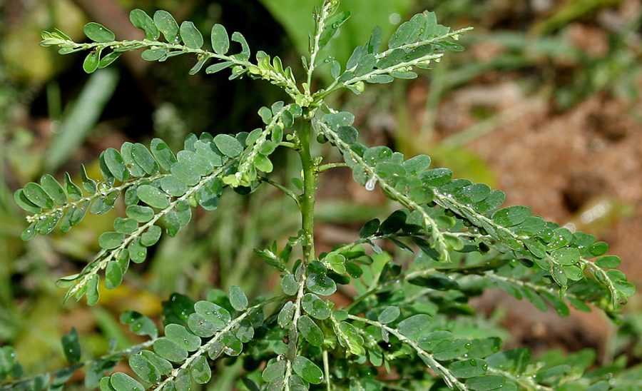

भूमि आँवलाCarry-me Seed
Phyllanthus amarus · Phyllanthaceae · FLR-0246

- Scientific name वैज्ञानिक नाम
- Phyllanthus amarus Schumach. & Thonn.
- Family कुल
- Phyllanthaceae
- Hindi हिंदी
- भूमि आँवला
- Local names स्थानीय नाम
- bhumi amla, bhui amla, bhuiamla, carry me seed
- Status here यहाँ की स्थिति
- naturalized
- Movement आवागमन
- Resident, here all year
- Known from कहाँ दर्ज
- Others have published records from the wider Awadh–Purvanchal plain, none yet from Basti–Ayodhya अवध–पूर्वांचल से दूसरों के प्रकाशित अभिलेख, बस्ती–अयोध्या से अभी नहीं
- IUCN IUCN
- not evaluated
- Review समीक्षा
- audited and independently read
When to look कब देखें
Present all year. साल भर मौजूद।
Uses and possibilities उपयोग और संभावनाएँ
“Traditional medicine” means a documented traditional use, not a claim that it works. Nothing on this page is medical advice.
Drawn from the documented uses in the profile below, where each is labelled traditional, current or a research lead. All uses →
Tell it apart from इनसे अलग पहचानें
भूमि आँवला / Carry-me Seed
Phyllanthus amarus Schumach. & Thonn. — Phyllanthaceae
भूमि आँवला (कैरी-मी सीड) — एक ख़ूबसूरत, छोटा पौधा जो अब पूर्वी उत्तर प्रदेश के खेतों, बगीचों और बंजर ज़मीन पर आम है। भारत में इसे हाल के दशकों में लाया गया है, लेकिन अब यह देश के अधिकांश हिस्सों में पाया जाता है। आयुर्वेद में इसे एक महत्वपूर्ण हेपेटोप्रोटेक्टिव (लीवर की रक्षा करने वाले) पौधे के रूप में माना जाता है। पत्तियों की व्यवस्था अँवले की याद दिलाती है, इसीलिए इसे भूमि (ज़मीन) का अँवला कहा जाता है।
Quick Identification त्वरित पहचान
| Feature | Description |
|---|---|
| Plant habit | Small annual herb, 30–90 cm, highly branched, erect to spreading |
| Leaves | Elliptic-oblong, 5–20 mm, arranged pinnately on the stem, giving fern-like appearance |
| Flowers | Minute (1–2 mm), greenish, clustered at leaf axils, easily overlooked |
| Fruits | Small, round capsules, 3–5 mm, initially green turning brown or reddish |
| Stem | Thin, green or reddish, angular, much branched from base |
| Roots | Tap root system |
Field tip: In a disturbed field or garden in August, look for a delicate-looking herb with a fern-like appearance created by small, pinnately-arranged leaves. The whole plant is moderately tall but airy. When the ripe fruits are reddish, the plant becomes more conspicuous.
हिंदी — कैसे पहचानें: बहुत छोटी पत्तियाँ फर्न की तरह व्यवस्थित, पूरा पौधा नाज़ुक दिखता है, फलियाँ गोल, पहले हरी फिर लाल।
Morphology आकारिकी
Biometrics:
| Measurement | Range |
|---|---|
| Plant height | 30–90 cm |
| Leaf length | 5–20 mm |
| Leaf width | 2–8 mm |
| Flower diameter | 1–2 mm |
| Fruit diameter | 3–5 mm |
Stem and branches: Thin, angular, green or reddish, extensively branched, smooth to slightly hairy.
Leaves: Simple, alternate, elliptic-oblong, margins entire, glabrous or nearly so, arranged pinnately giving the plant a feathery appearance.
Flowers: Unisexual, minute, pale green or white, borne in clusters at the leaf axils; staminate and pistillate flowers often on the same plant.
Fruits: Capsules, round to depressed-globose, 3–5 mm diameter, initially green, becoming brown or reddish when mature, 2–3 seeded.
हिंदी: बहुत छोटा सब कुछ, पत्तियाँ फर्न जैसी, फलियाँ गोल और रंगीन।
Behaviour & Ecology व्यवहार और पारिस्थितिकी
A small annual herb of disturbed ground and cultivated areas, thriving in poor soil and partial shade. It establishes rapidly during and after the monsoon and flowers profusely through the cool season. The plant is prolific in seed production, and seeds germinate readily when moisture is available. Though originally from Africa, it has naturalized across South Asia and is now often taken to be a native plant of the region.
हिंदी: अफ्रीका से आया है पर अब यहाँ पूरी तरह पनप गया है, खराब ज़मीन पर भी अच्छे से बढ़ता है, बहुत बीज देता है।
Life Cycle / Phenology जीवन चक्र
| Month / season | Event |
|---|---|
| July–August | Germination after onset of monsoon rains |
| August–September | Rapid growth and vegetative branching |
| September–November | Flowering and fruit set; fruits mature in succession |
| December–February | Peak fruit maturity; plant withers gradually in dry season |
Seeds show no dormancy and germinate readily whenever moisture is available; they are persistent in soil.
हिंदी: बरसात में उगता है, सर्दी तक फूल और फल देता है, पूरे साल बीज बना सकता है।
Associated Species / Interactions संबंधित प्रजातियाँ
- Field companions: Bhumi Amla (Phyllanthus fraternus, a related species), Brahmi, Ashwagandha
- Medicinal use associations: blended with Haritaki and other plants in Ayurvedic preparations for liver support
Pests and Diseases कीट और रोग
Rarely damaged by pests; the small size and lack of obvious toxic chemicals mean most insects avoid it. Occasionally affected by foliar fungi in very wet conditions.
Agricultural / Human Relevance कृषि प्रासंगिकता
Agricultural status. Widespread but not a serious weed crop; often tolerated in gardens and field margins for its medicinal value.
Ethnobotanical use (documented traditional knowledge; not medical advice). In Ayurvedic medicine, the whole plant is dried and used in decoctions and powders, primarily for liver and digestive support. It is listed in modern Ayurvedic texts and classical references for its hepatoprotective properties. The plant is now the subject of considerable scientific research regarding its potential liver-protective compounds.
Today. Commercially cultivated in several Indian states for Ayurvedic pharmaceutical production. Sold as dried herb, powder, and extract in Ayurvedic markets. The plant has become an important ingredient in modern herbal liver-support supplements.
Research direction (a lead, not a result). Phyllanthus amarus contains compounds such as phyllanthin and hypophyllanthin, which have been studied for hepatoprotective and antiviral properties in published research; laboratory and clinical studies are ongoing.
हिंदी: अब आयुर्वेद की दवाइयों में व्यापक रूप से इस्तेमाल होता है, विशेष रूप से लीवर के लिए। विज्ञान में इसके गुणों पर बहुत अध्ययन हो रहा है।
Expected Locally स्थानीय रूप से अपेक्षित
Not a field record. Written from published accounts for eastern Uttar Pradesh. No confirmed local sighting yet — if you have seen it, that is what the atlas needs.
अभी तक स्थानीय पुष्टि नहीं। यह विवरण प्रकाशित स्रोतों से है, किसी अवलोकन से नहीं।
GBIF holds published records from the wider Awadh–Purvanchal plain, none yet from Basti–Ayodhya. To be expected in disturbed ground, garden margins, and field edges from July through February. More abundant after monsoon rainfall. Likely present in the region but not yet formally recorded.
Distribution वितरण
Global range: Native to tropical Africa; now naturalized across tropical Asia, particularly in India, where it has become established as a quasi-native species.
In India: Widespread across the Indo-Gangetic plain and in peninsular India; now found from sea level to moderate elevations.
In Uttar Pradesh: Becoming increasingly common in disturbed ground and gardens.
In Basti district / eastern UP: Likely present but not yet formally confirmed in the region.
Research Questions शोध प्रश्न
Anyone can investigate these | कोई भी इन प्रश्नों की जाँच कर सकता है
- Where do you find Phyllanthus amarus in your village, and in what season? / आपके गाँव में यह पौधा कहाँ और किस मौसम में मिलता है? — Walk gardens and waste ground in August and October.
- Is it used locally in any household remedy or Ayurvedic preparation? / क्या कोई इसे घर के इलाज या आयुर्वेदिक दवाई में इस्तेमाल करता है? — Ask in ten households and local practitioners.
- Which insects pollinate the flowers? — Observe with a hand lens for 30 minutes in September.
- How many seeds does a single plant produce, and how far do they disperse? / एक पौधा कितने बीज देता है? — Collect mature fruits and count seeds.
- Does it persist in soil from year to year, or does it die out in winter? / क्या यह साल-भर ज़मीन में रहता है, या सर्दी में मर जाता है? — Mark a plot and observe through the seasons.
Similar Species मिलती-जुलती प्रजातियाँ
| Species | How to tell apart | हिंदी |
|---|---|---|
| Bhumi Amla (Phyllanthus fraternus) | Slightly smaller, flowers minute and greenish; fruits often reddish. Difficult to distinguish without close inspection. Both are used interchangeably in Ayurveda | दोनों बहुत मिलते-जुलते हैं; विशेषज्ञ की मदद से पहचानें |
| Shepherd's purse (Capsella bursa-pastoris) | Larger leaves, heart-shaped fruits, from the mustard family, more common in cooler months | बड़ी पत्तियाँ, दिल के आकार की फलियाँ |
Field rule: A delicate-looking, branched herb with fern-like small pinnate leaves and tiny greenish flowers followed by small round fruits is Phyllanthus amarus.
Taxonomy & Classification वर्गीकरण
Original description. Originally described by Schumacher and Thonning in 1827. The species is sometimes listed as a synonym of Phyllanthus niruri or treated as a subspecies, though molecular work now supports its distinct status.
Subspecies. Monotypic — no subspecies are currently recognised, though multiple varieties exist across Africa and Asia.
Family and order placement. Phyllanthaceae, the Phyllanthus family, in the order Malpighiales. A large genus of over 300 species found across tropical regions.
Phylogenetic notes. Phyllanthus amarus clusters with other African species within the genus; its relationship to Asian Phyllanthus species is still being refined.
IUCN status rationale. Not evaluated. Naturalized widely; common in cultivation. No conservation concern.
Photo Gallery फोटो गैलरी
Photos needed आवश्यक फोटो
- [ ] Whole plant in a garden, September (पूरा पौधा)
- [ ] Leaves showing pinnate arrangement (पत्तियों का विस्तार)
- [ ] Ripe red fruits close-up (पकी लाल फलियाँ)
No photos yet — add field photos to media/species/carry_me_seed/ and run node scripts/sync_photos.js.
References संदर्भ
- Schumacher, C.F. & Thonning, P. (1827). Beskrivelse af Guineiske Planter. Copenhagen. [original description]
- Hooker, J.D. (1875). The Flora of British India, vol. 5. L. Reeve, London. (Phyllanthus)
- Duthie, J.F. (1903). Flora of the Upper Gangetic Plain and of the Adjacent Siwalik and Sub-Himalayan Tracts. Government Printing, Calcutta.
- Kirtikar, K.R. & Basu, B.D. (1935). Indian Medicinal Plants, 2nd ed., vol. 3. Lalit Mohan Basu, Allahabad.
- Chopra, R.N., Nayar, S.L. & Chopra, I.C. (1956). Glossary of Indian Medicinal Plants. CSIR, New Delhi.
- Prashant Ayurved Sansthan (2001). An Encyclopaedic Dictionary of Ayurveda. Chowkhambha Sanskrit Series, Varanasi.
- GBIF Occurrence Data — Phyllanthus amarus, India (2026).
Source file: species/flora/medicinal/carry_me_seed.md